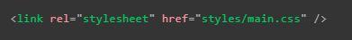
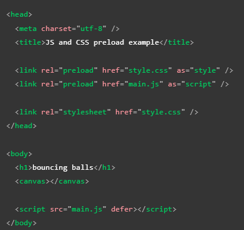
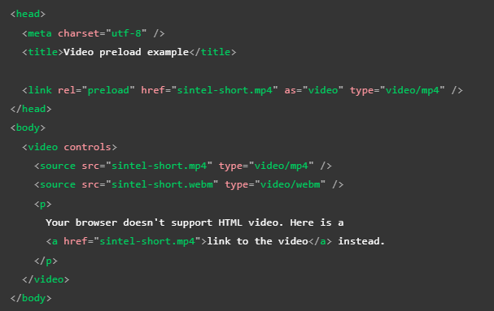
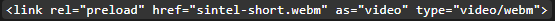
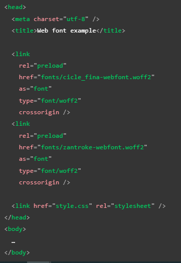
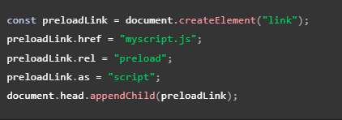
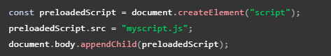
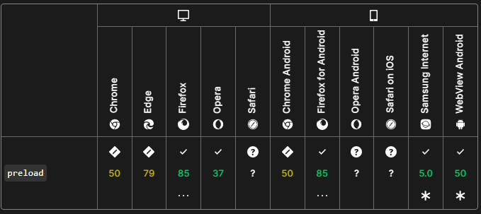

Precargar Contenido
Segun cuales sean las caracteriticas y requerimientos de una paguina a la hora de ser cargada por el navegador, se puede dar el caso de que se requiera que ciertos scrips o elementos esten disponibles al momento de que los elementos seaa cargados, todo esto para el correcto funcionamento de la paguina, sin embago la forma en la que se cargan los diversos archivos que conforman una paguia web se encuentra ya establecida ya de antemano.
Existe una forma de asignar un elemeto o dato para que sea tratado con prioridad por el navegador a la hora de cargar la paguina, para que de ese modo este recurso este disponible al momento de que sea requerido, estipo de configuración se logra empleandolo en los metadatos de la paguina, más precisamente con el elemento "link" el cual posee el atributo "rel" el cual a su vez cuenta con el valor "preload".
En otras palabras al aplicarse el valor "preload" en el atributo "rel" del alemento "link" se puede definir que algun elemento se cargue con antelación ya que este sera requerido rapidamente al cargarse la paguina, un aspecto a tener a cuenta de esta implementación es que pese a que el nombre de este valor contiene el termino 'precargar' realmente este no carga ni ejecuta ningun script, simplemente asigna que estos elementos seleccionados sean descargados y almacenados en cache con prioridad.
Por lo tanto el alemento "link" no solo se utiliza para cargar los estilos CSS de la paguina:

Si no que tambien tiene la función de designar algun elemento para que se precargue al iniciarse la carga de la paguina com se puede apreciar en el siguiete ejemplo:

Este ejemplo a parte de simple puede parecer trivial sin embargo los veneficios de implmentar el preload se hacen notar a la hora de que los demás elementos HTML sean caegados, por ejemplo es util selecionar a los siguietes elementos para que sean precargados con antelación:
Recursos a los que se les apunta desde dentro de CSS como fuentes o imagenes
Recursos que puedan solicitar JavaScrip como JSON scrips importados o web workers
imagenes más grandes y archivos de video
Al emplear el "preload" es importante tener presente:
Atributo As
Es posible mejorar el rendimiento del "preload" con el atributo "as", el cual se utiliza en conjunto con este y permite definir de que tipo de archivo se trata la precarga, al hacer esto se optienen las siguientes ventajas:
Priorizar la carga de recursos con mayor presición
Almacenar el chache para futuras ocaciones reutilizando el recurso si es presiso
Aplicar la politica de seguridad correcta al recurso
Establecer los encabezados de solicitud de aceptación correctos
Debido a que es posble precargar muchos tipos de archivos el atributo "as" posee muchos valores, algunos de estos son:
| Valor del atributo |
Tipo de archivo |
Descripción |
| audio |
audio |
Define un archivo de audio, se incorpora igual que lo aria en un elemento "audio" |
| document |
document |
Define un documento HTML que sera incrustado en un "frame" o un "iframe" |
| embed |
Algún recurso |
Cualquier recurso que será incrustado en un "embed" |
| fetch |
Recurso Fetch o XHR |
Recurso al que se accedera mendiante una solicitud fetch o XHR, como un archivo ArrayBuffer, WebAssembly/WASM binario o JSON |
| font |
Fuente |
Define un archivo de fuente CSS |
| image |
archivo de imagen |
Define la precarga de un archivo de imagen, normanlmente se usa para imagenes particularmente grandes |
| object |
Algun Recurso |
Un recurso para ser incrustrado en un elemento "object" |
| script |
ARchivo JS |
Define la precarga de un archivo JavaScrip |
| style |
Estilos CSS |
Define la precarga de una hoja de estilos CSS |
| track |
archivo WebVTT |
Define la carga de un archivo WebVTT |
| worker |
worker web o JS |
Define la precarga de un worker de JavaScrip o un worker compartido |
| video |
archivo de video |
Define la precarga de un archivo de video como los que se usan comunmente en los elementos "video" |
Incluyendo el tipo MIME
Los elementos "link" son capases de recibir un atributo "type" el cual a su vez puede recibir el tipo MIME del recurso al que apunta el elemento. Esto particularmente util cuando se precargan recursos, en otras palabras la función de esto es que el navegador tenga una forma de determinar si el recurso es compatible con sigo mismo, en caso de que si lo sea, el recurso será descargado, por otro lado en caso de que el caso de que no sea compatible el recurso simplemnte será ignarado por el navegador.
Nota: MIME o Múltiples Internet Mail es una extensión del protocolo de correo de Internet original que permite a las personas utilizan el protocolo para el intercambio de diferentes tipos de archivos de datos en Internet: audio, vídeo, imágenes, programas de aplicaciones y otros tipos, así como el texto.
Acontinuacón se muestra un fragmento de codigo el cual en terminos simples es el responsable del comportamiento central detras de la precarga general:

Este codigo de ejemplo asigna un video.mp4 para que se carge previamente en todos aquellos navegadores que tengan soporte para videos mp4, por lo tanto para los usuarios de estos navegadores la interacción con el video sea más suave y receptiva en comparación con aquellos navegadores que no sean compatibles con el recurso.
Es bueno tener en cuenta que en el caso de que se emplee la tecnica de asignar tanto un video ".mp4" como uno ".webm" con el fin de mejorar la compatibilidad, si se llega a presentar un usuario desde un navegador que posea compativilidad con ambos formatos entonces los dos recursos serán descargados, todo esto pese a que realmente solo uno de estos llegara a ser utilizado, como se puede apreciar en este ejemplo:

Por lo tanto no es recomendable el precargar varios recursos para un mismo elemento, para estos casos lo mejor simplemente es precargar el recurso que se crea que llegará a ser utilizado por la mayoria de los usuarios, cabe señalar que esto no hará que el video.webm no este disponoble para los navegadores que lo requieran, de hecho en el ejemplo HTML mostrado con anterioridad ese codigo tambien hace que se precarge el video.webm pero lo define de una forma que hara que este no sea precargado innecesariamente para todos los usuarios.
Recuperaciones habilitadas para CORS
Al precargar recursos que se obtienen con CORS habilitado (por ejemplo, fetch(), XMLHttpRequest o fuentes), se debe tener especial cuidado al configurar el atributo crossorigin en su elemento de enlace. El atributo debe configurarse para que coincida con el modo de credenciales y CORS del recurso, incluso cuando la recuperación no es de origen cruzado.
Nota: Recordemos que el intercambio de recursos de origen cruzado o CORS es un mecanismo que permite que se puedan solicitar recursos restringidos en una página web desde un dominio diferente del dominio que sirvió el primer recurso.
Como se mencionó anteriormente, un caso interesante en el que esto se aplica son los archivos de fuentes. Por varios motivos, estos deben obtenerse mediante CORS en modo anónimo, usando este caso como ejemplo resultaria en lo siaguiete:

En este ejemplo no solo se proporciona sugerencias de tipo MIME en los atributos de tipo, sino que también se proporciona el atributo de origen cruzado para asegurar que el modo CORS de la precarga coincida con la solicitud de recurso de fuente eventual.
Precargar Script de JavaScrip
Como ya se ha mancionado anteriormente es posbli el precargar Scrips JavaScrip, recordemos que la prearga no significa que se ejecutara el script, por ejemplo el siguiete codigo:

Aquí creamos una instancia de HTMLLinkElement y luego la adjuntamos al DOM, esto significa que el navegador precargará el archivo myscript.js, pero aún no lo usará. Para usarlo se podría hacer esto:

Esto es útil cuando desea precargar un script, pero luego posponer la ejecución hasta exactamente cuando lo necesite.
Compatibilidad con Navegadores
A continuación se muestra una brebe tabla de la compatibilidad de este atributo en las diferentes versiones de los principales navegadores:
